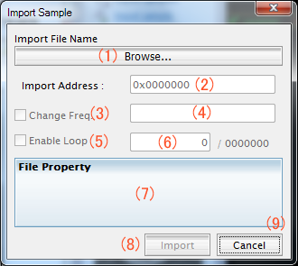

Import Sample 機能説明
この機能を使用することで、任意のサンプルファイルを ROM にインポートすることができます。
追加できるファイルは以下の種類になります。
- Windows Wave (.wav)
- Windows の wav ファイルを読み込みます。
無圧縮、 8bit or 16bit、mono or stereo のファイルを読み込み可能ですが、
8bit mono 以外は GBA に合わせ 8bit mono にリサンプルされます。
リピート位置や、再生周波数は任意の値に変更可能です。
上記条件に合致しない wav ファイルは RAW 扱いになります。
- Sappy Source (.s)
- Export samples で出力した .s ファイルを読み込みます。
ヘッダからすべて記述されているので、
インポート時に周波数はリピート位置の変更はできません。
（MID2AGB で出力した .s ファイルを読み込んでも RAW としか認識しません）
- RAW (.raw)
- 任意のバイナリファイルをとして読み込み可能です。
.wav や .s として認識できなかったデータもこれになります。
周波数やリピート位置などの情報がデータに無いため、すべて手動での設定が必要です。
（周波数については初期値として 10512Hz が自動で与えられます）
なお、Export Samples で出力できる .its (Impluse Tracker Sample) はサポートしていません。読み込みエラーとなります。
※ここでの周波数変更は、再生速度（音程）を変更するためで、サンプルデータ自体の変更は行いません。
（周波数を上げると早送り、下げるとスロー再生になります）
Import Sample 画面説明

各項目の説明
- (1) インポートするファイル参照ボタン及びファイル名表示
- Browse... 部をクリックすると、ファイル選択画面が出ます。選択するとファイル名表示に切り替わり、下部の各種情報更新が行われます。
- (2) インポート先アドレス
- インポート先の書き込みアドレスを指定します。ROM イメージより大きいアドレスを指定した場合、自動的に ROM サイズを拡張します。
拡張した空き領域は 0x00 で埋められます。
- (3) 基準周波数変更チェック
- (4) 基準周波数入力欄
- ここにチェックを入れ、(4)に再生周波数を書くことで、任意の周波数を指定して書き込みを行います。
標準値より高くすると早送り再生、低くすると遅回し再生となります。
- (5) サンプルループ有効チェック
- (6) サンプルループ位置入力欄
- (5) にチェックを入れることで、サンプルをループさせることができます。
ループしたいアドレスが決まっている場合は、(6)にその位置を入力してください。(6) の右に出ている数値が最大値です。これより大きな数値を入力した場合の動作は不定です。
- (7) ファイル情報表示欄
- (1)に表示されたファイルの情報を表示します。ここを見ることで、正しくサンプルが認識しているか判断してください。
- (8) インポートボタン
- このボタンを押すことで、インポートが行われます。
- (9) キャンセルボタン
- このダイアログを閉じ、メイン画面へ戻ります。曲が再生中の場合は再生が最初から始まります
簡単なインポート手順
- (1)ボタンを押してインポートしたいサンプルファイルを選択する。
- (7)を見て、正しくファイルが認識していることを確認する。
- (2)にインポートしたいアドレスを入力する。
- 再生周波数を変更する場合は(3)にチェックを入れて、(4)に周波数を入力する。
- ループポイントがあるサンプルの場合は、(5)にチェックを入れて、(7)にループアドレスを入力する
- (8)ボタンを押す
- Edit Voice Table 画面で、DirectSound の Address1 にインポートしたアドレスを入力する
どこからかエクスポートしたファイルをインポートする場合は .s 形式でのインポートをオススメします。
Sample の情報があらかじめ入っているため、インポートしただけで、周波数とループ位置を再現してくれます。
そのため、逆にインポートするデータが .s ファイルの場合、 Change Freq と Enable Loop の項目は変更できません。ご了承ください。